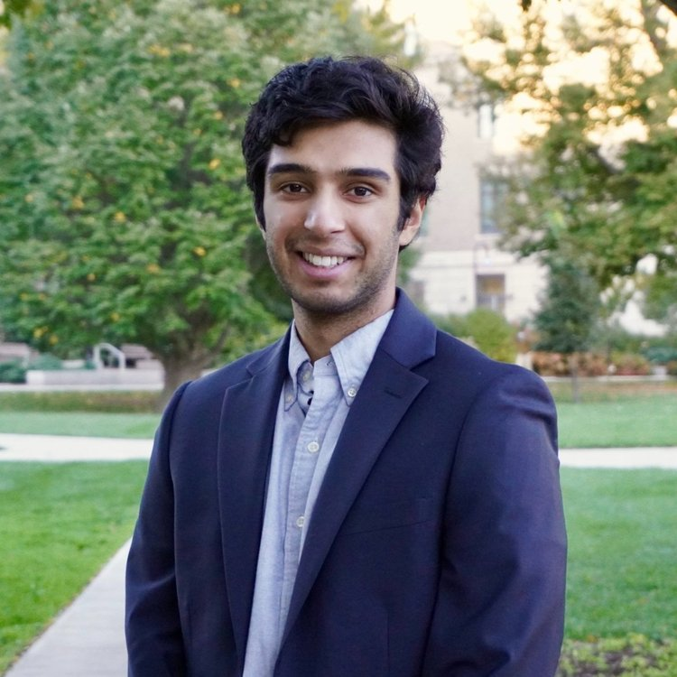

Advay Koranne
About me

Contact:
ak845@cornell.edu
GitHub
|
linkedin
|
Twitter
Relevant Experinces
Part-time Research Analyst @ OP Crypto Venture Capital (December 2021 - current)
Part-time Research Analyst @ Smith + Crown (June 2021 - December 2021)
Cornell Quant Fund Blockchain Team Lead (May 2021- Present)
Cornell Blockchain Analyst (Feb 2021- Present)
Research Fellowship @ Smith + Crown (May 2020-August 2020)
Mathnasium Instructor/Tutor - West Linn (February 2019 - August 2020
Software Intern Mentor Graphics a Siemens Business (June 2019 - August 2019)
Research and Projects
Modern Portfolio Risk Management
(2021).
Non-Periodic Psudeo-Random Number Generator
(2018 - 2019).
Optimization of the Bailey–Borwein–Plouffe formula(BBP) algorithm by using the Zeckendorf theorem
(2019 - 2020).
Awards
2nd place Northwest Science Expo in Mathematical Sciences (2020).
Honorable mention by the National Security Agency Research Directorate.
(2019)
Invited to present to National Security Agency lead Directorate.
3rd Degree Kukkiwon certified black belt (2011 - present). Competed at Taekwondo Nationals (2018, 2019)
Best of Fair North West Science Expo and 1st Place CS and Robotics NWSE.
Intel International Science Fair Finalist.
Relevant Course Work
CS Courses: OOP & Data Structures, Discrete Structures, Computational Mathematics for Computer Science.
Math Courses: Linear Algebra, Multivariable Calculus, Real Analysis.
About me
2nd year student at Cornell University planning on majoring in math and CS
Enjoy Playing tabla
, chess, spikeball, poker, crypto and snowboarding at Mt. Hood on powder days
Planning on majoring in Computer Science and Mathematics
Skills
Programming Languages: Python (Intermediate); Java (Intermediate); Julia (Beginner); OCaml(Beginner)
Tools: Tableau, Git, LaTeX, Selenium, Pandas, NumPy.
Languages: Hindi (Fluent), Mandarin (Proficient).